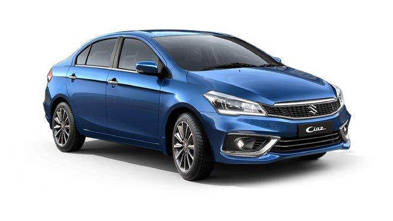

The Maruti Ciaz has 1 Petrol Engine on offer. The Petrol engine is 1462 cc . It is available with Manual & Automatic transmission.Depending upon the variant and fuel type the Ciaz has a mileage of 20.04 to 20.65 kmpl & Ground clearance of Ciaz is 170 mm. The Ciaz is a 5 seater 4 cylinder car and has length of 4490 mm, width of 1730 mm and a wheelbase of 2650 mm.
-Some key specifications:
City mileage: 16.9 kmpl
Engine Displacement: 1462
Max Power:103.25bhp@6000rpm
Seating Capacity: 5
Fuel Type: Petrol
Transmission Type: Automatic
Boot Space: 510L
Service Cost: (Avg. of 5 years)Rs.3,689
No. of cylinder: 4
Max Torque (nm@rpm): 138Nm@4400rpm
Fuel Tank Capacity: 43L
Ground Clearance Unladen: 170mm
Turbo Charged: No
Drive Type: FWD
For more details you can visit the official website:
